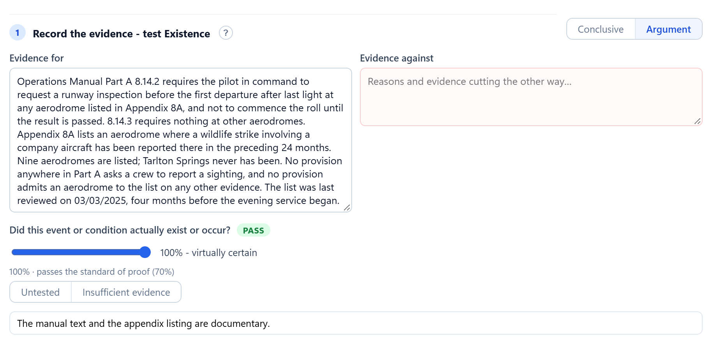

Learn IWS by doing one, then look things up as you go.
Two places to start, both written for the application as it ships. The User Guide is the same guide you get under Help in the app.

Getting started · 20 to 30 minutes
Your first investigation
An illustrated walkthrough on a small fictional occurrence, from the start screen to the Evidence and Argument Tables. Every step works at Free.
For anyone opening IWS for the first time.
Start the walkthrough
User Guide · reference
Every tab, form and setting
Organised by where things are in the app, each section linkable: the canvas and objects, evidence, the timeline, the Record, exporting, settings and licences.
For investigators already working in IWS who need to find or check something.
Open the User GuideAlso useful
- MethodologyWhy the three tests run in the order they do, and how results become findings.
- Case studiesThree fictional investigations worked from notification to final report.
- ChangelogWhat changed in each release.